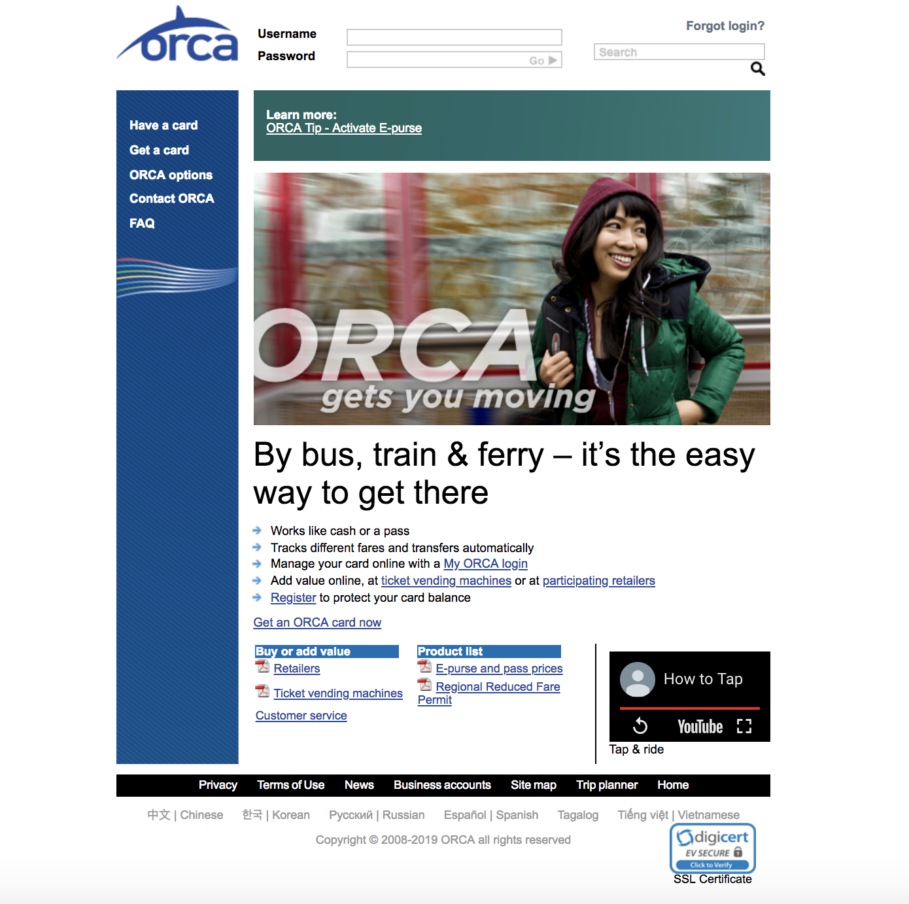
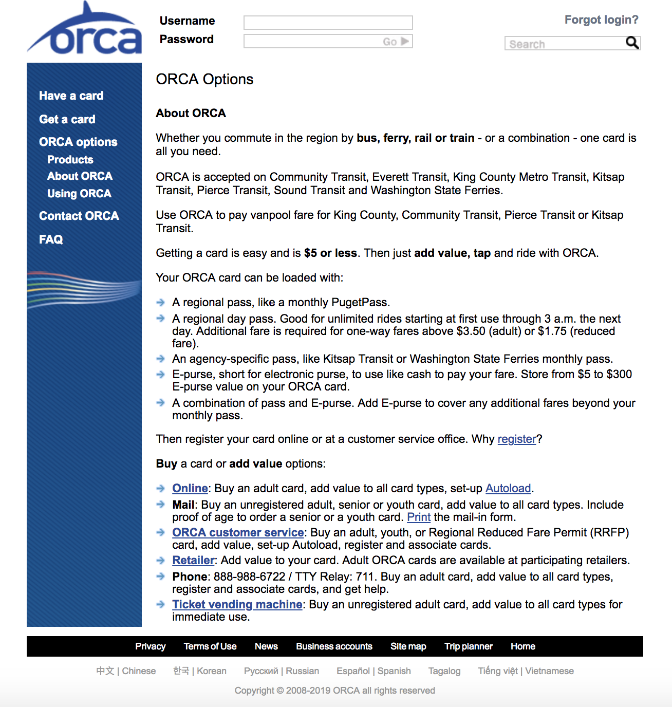
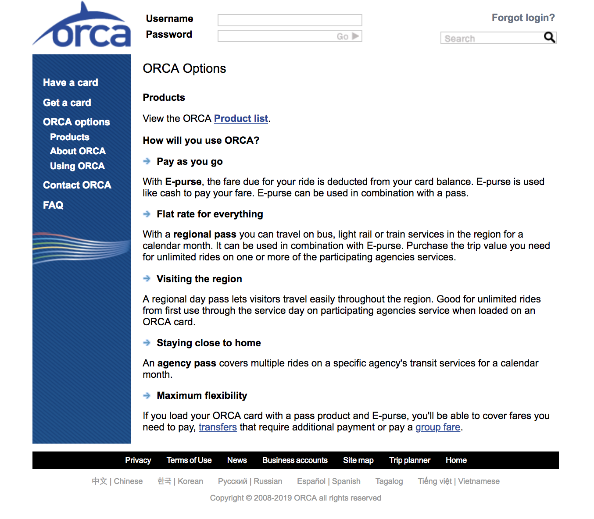

For my first post I would like to discuss the website for purchasing and loading an ORCA card in Seattle: orcacard.com. This website has a reputation for being difficult to navigate and since this is the only online option for buying or filling ORCA cards, if the frustration becomes to great, people will simply find a participating store or Sound Transit office to fill their cards. I think the goal is to encourage online transactions so a review is in order.
There are five criteria I will use for evaluating this website: accessibility, design, content, technological aspects and interactivity, and creativeness/originality.
The main page of Orcacard.com is pictured below.
 Main page for Orcacard.comThe landing page of the ORCA website has a picture and slogan in the middle, a navigation menu in a banner on the left, a login form and search bar on the top, and more links toward the bottom. It also has an embedded YouTube video in the lower right hand corner.
In evaluating this page for accessibility, my first concern is the lack of language translations available; there are six in addition to English. A second concern is that the use of PDF's for documentation make it impossible for screen readers to parse the text on those pages.
Design
The design of this website is not particularly eye grabbing but it doesn't hurt my soul either. The picture in the center of the main page doesn't seem to have any purpose and I feel it is primarily taking up usable space. Although login forms and the menu main are top and left side where the eye usually tracks to, the picture is a distraction to that tracking. In addition, many of the links people might be looking for are buried on the bottom of the page. The use of green and blue on a white background is relaxing and well done. Although it is a nice touch to have an embedded video, the video itself is more of a silent advertisement and serves little purpose, see content. A few other design flaws I feel are the search bar located right below the "forgot login?" link, when the two functions have nothing to do with each other, and "forgot login?" is not styled to look like a button or link at all. Links are generally styled in blue with an underline but this is not consistent.
The Buried Beginning
Besides visual design, the architectural design of the website is a disaster. The first two links in the menu on the left side bar seem to be tacked on as an after-thought, with the third item being more of an introduction. I want to focus on the third item, ORCA options, to give an idea of how jumbled together this site is. A picture of the screen is below.
 Orca options page for Orcacard.comWhen you click on ORCA options you get a new page and a drop down menu in the side bar under the ORCA options link. Three separate links are in the dropdown: Products, About ORCA, and Using ORCA. Strangely, the new page is titled "ORCA options", but the content is labeled "About ORCA". To get to the first item in the dropdown menu, Products, you can click on it, and it appears as below.
 ORCA Products page for orcacard.comAs you can see, although the top of the page has a link to a products PDF (more clicking), the rest of the page is titled "How will you use ORCA", but this is also the title of the third menu item. This entire page could go into a very pared down introduction page for people new to ORCA and the website.
Content
Ah, content. This part of the website also needs a complete overhaul. My main gripe here is that instead of dealing with one task at a time, too many directions are listed on one page, and it soon gets overwhelming. As mentioned above, the embedded video is of people putting on shoes, feet boarding buses, hands with ORCA cards and cell phones, all to a guitar and drum soundtrack. A video showing riders how to actually buy refill cards would be more useful.
I feel the goal for this website should be to encourage people to get a card online, and the first page should make this easy and understandable. Links to ordering by mail or in person could be prominent, and lead you to a different page. Since elderly and youth purchasers cannot buy online (they must prove their age), this should be the first weeding process done. Why make those people slog through the directions for online purchase when they cannot do it? My second big gripe is that the some links just pop you to a glossary page with a list of terms, and the terms themselves end up requiring you to click on them again. As this list is long, it is not a guarantee that you will see your term on the page when you get there and scrolling may be required to find it. You need to find your term and click to see a definition. I feel a frame popping up with the definition would be more usable than what they have designed. And some people will be confused when they do not see the term listed. In the end, there is far too much information on most pages and it is not written in a simple, easy to understand way.
Technological aspects and interactivity
In an effort to say a few positive words about this website, I will say I was able to create an account and login with no issues. I possess an ORCA card already, and I was able to register it and add funds. The only irritating feature was having to tab through birth date and credit card fields instead of the form doing it automatically. I would also suggest that all links be consistently styled and immediately get you to where you need to be.
Creativeness/Originality
Although this website is lacking in both these categories, I think it would be difficult to combine a clean efficient website that gets you in and out in a hurry, and something that makes you go ah. Would love to hear your ideas about this, please contact me you have any suggestions.